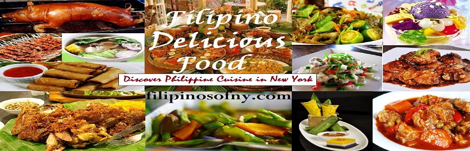

FilipinoTown Restaurant Week - Woodside NY
 <Four Course Meal All Filipino Food $25
Kabayan Restaurant - 49-12 Queens Boulevard Woodside, NY
Tito Rad's Grill & Restaurant - 49-10 Queens Boulevard Woodside, NY
hawan Restaurant - 40-06 70th St Woodside, NY
Promdi Restaurant - 6916 Roosevelt Ave. Woodside, NY
House of Inasal - 65-14 Roosevelt Ave. Woodside, NY
Perlas ng Silangan Restaurant - 69-09 Roosevelt Ave Woodside, NY
Renee's Kitchenette & Grill - 6914 Roosevelt Ave Woodside, NY
Kabayan II Turo-Turo - 6912 Roosevelt Ave Woodside, NY
Fritzie's Bake shop - 69-10 Roosevelt Ave Woodside, NY
Baby's Grill & Restaurant - 6828 Roosevelt Ave Woodside, NY
Krystal's Cafe & Pastry Shop - 6902 Roosevelt Ave Woodside, NY
Red Ribbon Bakeshop - 65-02 Roosevelt Ave, Woodside, NY
Jollibee - 62-29 Roosevelt Ave Woodside, NY
Engeline's Restaurant & Bake Shop - 5828 Roosevelt Ave Woodside, NY
Papa's Kitchen - 65-40 Woodside Ave Woodside NY